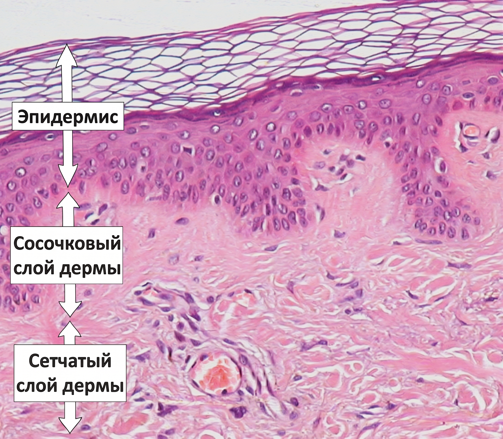
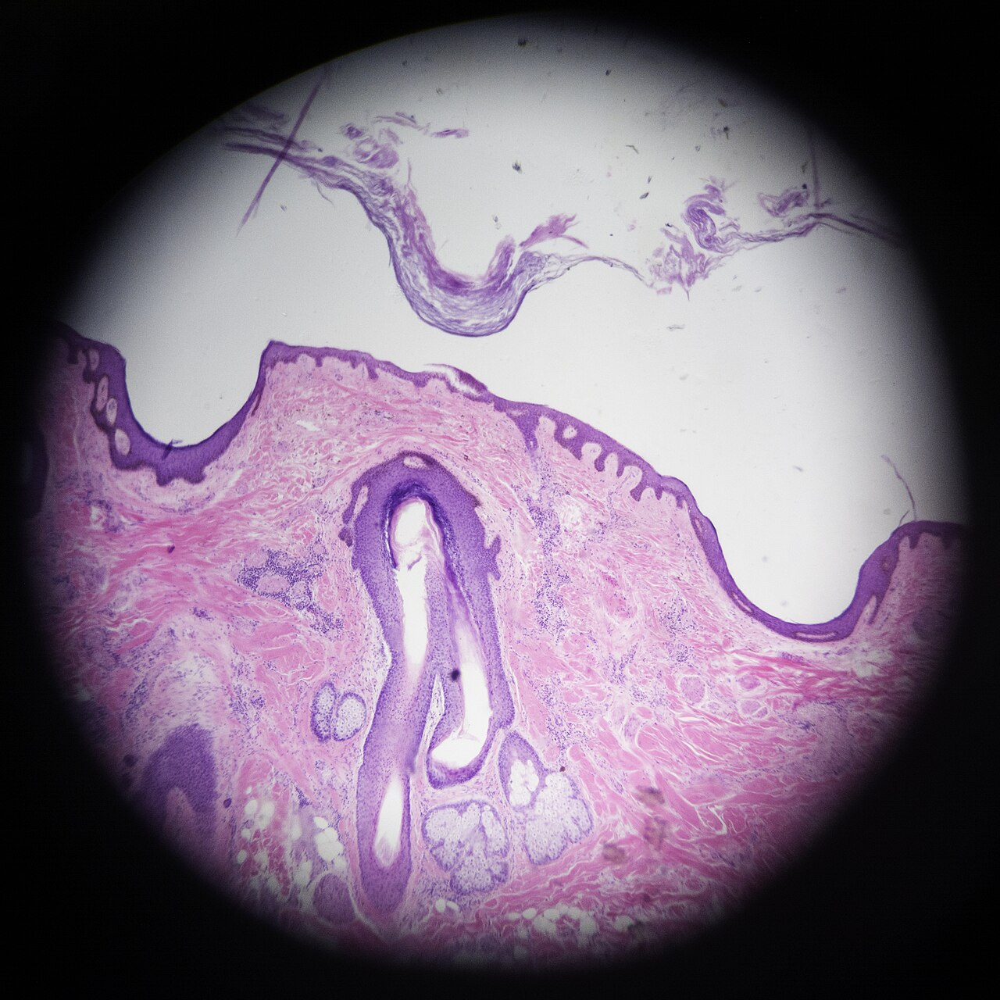
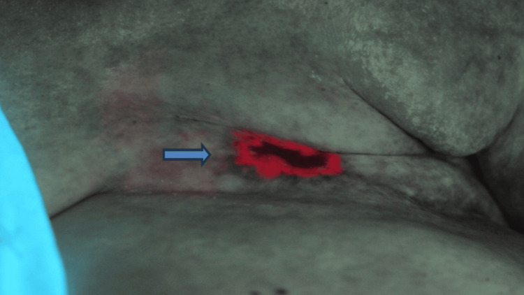
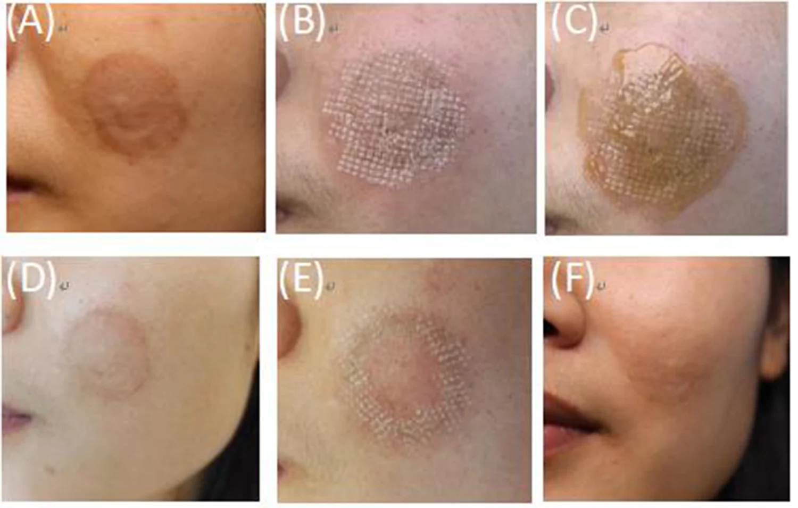
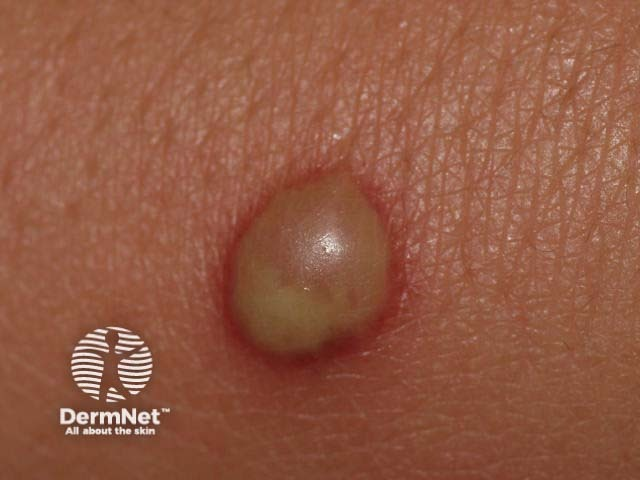

Строение кожи. Первичные и вторичные морфологические элементы. Функции кожи. Принципы диагностики и лечения кожных заболеваний. Пиодермия
Строение кожи: общий план и происхождение слоёв
Кожа — самый большой орган тела: площадь у взрослого достигает 1,5–2 м², масса — около 5% веса тела, толщина — от 0,5 до 4,0 мм. Кожа устроена слоями с разным эмбриональным происхождением. Снаружи — эпидермис, многослойный плоский ороговевающий эпителий, производный эктодермы. Под ним — дерма, соединительнотканная основа, происходящая из мезодермы и частично из нервного гребня. Ещё глубже — гиподерма, тоже производная мезодермы.
Каждый слой выполняет особую роль. Эпидермис создаёт механический и химический барьер; дерма (0,5–4,75 мм) обеспечивает прочность и эластичность, несёт сосуды и нервные окончания; гиподерма служит депо энергии и термоизолятором.
Все три слоя сформированы к 7-му месяцу внутриутробного развития. У детей до 7 лет в эпидермисе отсутствуют зернистый и блестящий слои, что делает кожу более проницаемой для токсинов и аллергенов. pH кожи у взрослых — 5,5–6,0 (слабокислая, подавляет патогенные бактерии); у детей — 6,12–6,72, среда менее защищённая.
Эпидермис состоит из пяти слоёв кератиноцитов: базального, шиповатого, зернистого, блестящего и рогового. Кератиноциты рождаются в базальном слое, движутся к поверхности, теряют ядро и органеллы и превращаются в роговые чешуйки. Дерма делится на сосочковый и сетчатый подслои; в ней расположены волосяные фолликулы, сальные и потовые железы, Т-лимфоциты (90% всех лимфоцитов кожи). Под дермой — гиподерма: дольки жировой ткани с крупными сосудами и нервами.
Ключевой вывод раздела: кожа — трёхслойный орган с разным эмбриональным происхождением слоёв, и понимание этой слоистости объясняет, почему одни болезни поражают только эпидермис, другие уходят в дерму, а третьи захватывают подкожную клетчатку.
Строение кожи: эпидермис и его пять слоёв
Эпидермис — многослойный эпителий, в котором клетки рождаются внизу, поднимаются вверх и постепенно превращаются в роговые пластинки. Этот путь описывают пять слоёв — снизу вверх.
Базальный слой (stratum basale) — однорядный, из призматических клеток на базальной мембране.[2, с. 1] Постоянное митотическое деление гонит новые клетки вверх. Среди кератиноцитов — три особые популяции. Меланоциты синтезируют меланин и накапливают его над ядром кератиноцита, создавая защитный экран от ультрафиолетового и радиоактивного излучения.[1, с. 18] Клетки Лангерганса — дендритные клетки иммунного надзора. Клетки Меркеля — тактильные, связаны с нервными окончаниями и воспринимают лёгкое прикосновение.
Шиповатый слой (stratum spinosum) — 3–8 рядов клеток, соединённых десмосомами и протоплазматическими отростками.[2, с. 2] Между клетками циркулирует лимфа, доставляя питательные вещества: сосуды в эпидермис не заходят.
Зернистый слой (stratum granulosum) — 1–2 ряда клеток.[2, с. 2] В цитоплазме появляются зёрна кератогиалина, который превращается в элеидин — начало кератинизации.
Базальный, шиповатый и зернистый слои объединяют под общим именем мальпигиев слой — живая, делящаяся часть эпидермиса.[2, с. 2]
Блестящий слой (stratum lucidum) — безъядерные кератиноциты, заполненные гликогеном и элеидином; здесь завершается превращение элеидина в кератин.[2, с. 2] Хорошо развит на ладонях и подошвах, где кожа испытывает наибольшую механическую нагрузку; на коже складок и лица — слабо выражен или отсутствует.
Роговой слой (stratum corneum) — безъядерные роговые пластинки, плотно прилегающие за счёт взаимопроникающих выростов оболочек и ороговевших десмосом.[2, с. 2] Обеспечивает кислую реакцию поверхности кожи (pH 5,5–6,0) — химический барьер против патогенных микробов. У детей до 7 лет зернистый и блестящий слои не сформированы, реакция кожи слабощелочная (pH 6,12–6,72), барьерная функция принципиально слабее.
Весь путь от базального слоя до рогового — жизнь кератиноцита от рождения до гибели, превращённой в защиту.
Строение кожи: базальная мембрана, дерма и гиподерма
Базальная мембрана
Базальная мембрана образуется за счёт корнеподобных отростков базального слоя эпидермиса.[2, с. 2] Она прочно скрепляет эпидермис с дермой и служит барьером для бактерий, токсинов, иммунных комплексов и антигенов.[2, с. 2] Через неё же эпидермис получает из дермы кислород и питательные вещества — собственных сосудов у него нет.


Дерма
Дерма построена из клеточных элементов, волокнистых субстанций и межуточного вещества; толщина — 0,5–4,75 мм.[2, с. 3] В ней два слоя с принципиально разным строением.
| Признак | Сосочковый слой | Сетчатый слой |
|---|---|---|
| Ткань | Нежноволокнистая соединительная ткань с аморфным бесструктурным веществом | Компактная грубоволокнистая соединительная ткань |
| Волокна | Тонкие коллагеновые, эластические и аргентофильные волокна | Мощные пучки коллагеновых волокон, окружённых сетями эластических и аргентофильных волокон |
| Клетки | Фибробласты, фиброциты, гистиоциты, тучные клетки, меланофаги — в большом количестве | Те же клеточные элементы, но значительно реже |
| Сосуды и нервы | Капиллярные петли, питающие эпидермис; нервные окончания | Менее развитая сосудистая сеть; глубокое сосудистое сплетение, питающее придатки кожи |
| Главная функция | Питание эпидермиса, иммунный надзор, восприятие раздражений | Механическая прочность кожи |
Сосочковый слой (stratum papillare) расположен прямо под базальной мембраной.[2, с. 3] Фибробласты синтезируют коллаген и гликозаминогликаны, прежде всего гиалуроновую кислоту, обеспечивающую упругость и гидратацию. Гистиоциты фагоцитируют бактерии и чужеродные частицы. Тучные клетки, содержащие гистамин, участвуют в воспалительных и аллергических реакциях. В сосочках — капиллярные петли, питающие эпидермис, и нервные окончания, воспринимающие боль, зуд и температуру.[2, с. 3] Т-лимфоциты (90% всех лимфоцитов кожи) сосредоточены в эпидермисе и верхних слоях дермы.[1, с. 17]

Сетчатый слой (stratum reticulare) — основная, наиболее толстая часть дермы: мощные пучки коллагеновых волокон с сетями эластических и аргентофильных волокон.[2, с. 3] Клеток заметно меньше; механическая прочность кожи определяется именно этим слоем. В глубоком сосудистом сплетении берут начало сосуды, питающие волосяные фолликулы и железы.[2, с. 5] Артериовенозные анастомозы — в норме 16–66 капилляров на 1 мм² — обеспечивают терморегуляцию.[2, с. 5]

Гиподерма
Гиподерма (hypoderma) — подкожная жировая клетчатка из долек жировых клеток. Выполняет три роли: термоизоляция (защищает внутренние органы от охлаждения), депо жирорастворимых витаминов A, E, F и K[1, с. 8], амортизация ударов и давления. Слабо выраженная гиподерма ускоряет появление морщин.[1, с. 8]
.jpg)
Главное из раздела: базальная мембрана — активный барьер и канал питания; сосочковый слой богат клетками и сосудами, сетчатый — волокнами и прочностью; гиподерма — витаминное депо, термоизолятор и амортизатор одновременно.
Строение кожи: кровоснабжение, лимфатическая система и иннервация
Кожа на 69–73% состоит из воды и пронизана густой сетью сосудов, лимфатических капилляров и нервов. Система устроена строго послойно — снизу вверх, от подкожной клетчатки к поверхности.
Артериальное кровоснабжение: три сети
Питающие артерии приходят из мышечной фасции и формируют фасциальную сеть (rete fasciale) на границе гиподермы и фасции мышц. Выше, на границе сетчатого и сосочкового слоёв дермы, расположено субдермальное сплетение (plexus subcutaneus) — от него питаются волосяные фолликулы, сальные и потовые железы. Третья сеть — поверхностное сосудистое сплетение — лежит в верхней части сосочкового слоя и отдаёт терминальные артериолы к каждому сосочку дермы.
В сосочке капилляр имеет форму шпильки: артериальное колено поднимается к вершине, венозное — спускается обратно. Венозные сети повторяют послойность артериальных; в гиподерме они связаны с глубоким артериальным сплетением через артерио-венулярные анастомозы.[4, с. 8] Открываясь, эти анастомозы пускают кровь в обход капилляров и быстро меняют теплоотдачу.
Эпидермис лишён собственных сосудов и питается диффузно через базальную мембрану — этим объясняется отсутствие кровотечения при ссадинах в пределах эпидермиса.
Лимфатическая система
В коже две лимфатические сети: глубокая — на границе дермы с подкожной клетчаткой, поверхностная — на уровне вершин сосочков, куда вдаются слепые сосочковые синусы.[4, с. 8] Обе широкопетлистые и анастомозируют между собой.[2, с. 5]
У новорождённых клапаны лимфатических капилляров несовершенны, лимфа застаивается в «лимфатических озёрах» — отсюда склонность грудных детей к отёкам даже при минимальном воспалении.[2, с. 5]
Иннервация: сплетения и рецепторы
Основное нервное сплетение лежит в гиподерме; от него поднимается поверхностное сплетение — в нижний отдел сосочкового слоя.[2, с. 5]

Рецепторы делятся на свободные и инкапсулированные.[4, с. 8] Свободные нервные окончания пронизывают всю дерму и эпидермис. Осязательные клетки Меркеля расположены в базальном слое эпидермиса и воспринимают лёгкое тактильное прикосновение.[2, с. 5]
Тельца Мейснера (Meissner's corpuscles) — овальные образования в сосочках дермы, воспринимают боль, зуд и жжение.[2, с. 5] Колба Краузе (end-bulb of Krause) — инкапсулированный рецептор холода в эпидермисе; капсула пропускает преимущественно температурный сигнал, отсекая механические стимулы.[2, с. 5] Тельца Руффини (Ruffini endings) воспринимают тепло и расположены на границе гиподермы и дермы. Тельца Фатера-Пачини (Vater-Pacini corpuscles) — крупные луковицеобразные образования в глубоких слоях кожи и подкожной клетчатке; реагируют на давление и воспринимают положение тела в пространстве.[2, с. 5]
Каждый вид чувствительности обеспечен своим рецептором на строго определённой глубине: тельца Меркеля и Мейснера — у поверхности, колбы Краузе — в эпидермисе, тельца Руффини и Фатера-Пачини — в глубоких слоях. Т-лимфоциты, сосредоточенные в эпидермисе и верхних слоях дермы, дополняют эту систему иммунологическим надзором — но это тема следующего раздела.
Строение кожи: придатки — железы, волосы, ногти
В толще кожи и на её поверхности работают железы, растут волосы и ногти — всё это придатки кожи. Они возникают из эпидермиса в эмбриональном периоде и остаются его производными на протяжении всей жизни.

Сальные железы
Зачатки сальных желёз появляются на 2–3-й неделе внутриутробного развития; к рождению они уже активно работают — их секрет составляет жировую смазку новорождённого.[2, с. 6] Это сложные альвеолярные образования с голокриновым типом секреции: клетка накапливает липиды, затем целиком разрушается и сама становится секретом — кожным салом.[2, с. 6]
Почти все сальные железы открываются в волосяной фолликул, образуя сально-волосяной комплекс. Исключения — кожа половых органов и крупные железы на лице и спине, открывающиеся прямо на поверхность.[2, с. 6]
2.jpg)
Секрет желёз — смесь жирных кислот, эфиров холестерина, алифатических алкоголей, углеводородов, глицерина и азотисто-фосфатных соединений. Смешиваясь с потом, он образует водно-липидную мантию с бактерицидными и фунгистатическими свойствами; с ним же выводятся токсины и некоторые лекарственные вещества.[1, с. 19]

Потовые железы: две разные системы
| Признак | Экринные железы | Апокринные железы |
|---|---|---|
| Локализация | Вся кожа, кроме головки полового члена, малых половых губ и внутреннего листка крайней плоти | Кожа гениталий, ареол сосков, подмышечных впадин |
| Куда открываются | Непосредственно на поверхность кожи | В сально-волосяные фолликулы |
| Тип секреции | Мерокриновый (клетка не гибнет, секрет выделяется диффузией и осмосом) | Апокриновый (отшнуровывается верхушка клетки) |
| Формирование | 2-й месяц внутриутробного развития, от 200 до 800 на 1 см² | Формируются внутриутробно, но бездействуют до полового созревания |
| Срок активности | С рождения (взрослый тип — с полового созревания) | С полового созревания до 60–65 лет |
Экринные железы — самые многочисленные; их плотность варьирует от 200 до 800 на 1 см².[2, с. 6] Секреторные клетки не погибают — секрет образуется диффузией и осмосом (мерокриновый тип).[2, с. 6] У новорождённого железы сформированы, но потоотделение нарастает в первые два года жизни; переход к взрослому типу происходит в период полового созревания.[2, с. 6]
Апокринные железы расположены в коже гениталий, ареол сосков и подмышечных впадин, открываются в сально-волосяные фолликулы.[2, с. 7] Начинают функционировать с полового созревания и работают до 60–65 лет.[2, с. 7] С ними связан гнойный гидраденит — глубокие абсцессы в подмышечных впадинах и паховых складках.
Строение волоса и цикл его роста
Волосы формируются на 2–3-м месяце эмбрионального развития.[2, с. 7] Первые волосы плода — лануго (lanugo): тонкие, без пигмента. После рождения их сменяет веллус — пушковый волос. Длинные и щетинистые волосы характерны для волосистой части головы, бровей, ресниц, а с полового созревания — и для подмышечных впадин, лобка, лица у мужчин.[2, с. 7]
Волос состоит из стержня (над кожей) и корня, заключённого в волосяной фолликул. На дне фолликула — луковица с волосяным сосочком, где делятся клетки, дающие рост волосу. К фолликулу крепится мышца, поднимающая волос; при её сокращении возникает «гусиная кожа». Стержень трёхслойный: кутикула, корковый слой и мозговое вещество. Цвет определяется меланином ДОФА-положительных меланоцитов луковицы.
Волос проходит три фазы: анаген — активный рост (для длинных волос — 5–7 лет), катаген — инволюция фолликула (1–3 недели), телоген — выпадение (около 3 месяцев), после чего начинается новый анаген.[2, с. 8]

Строение ногтя
Ноготь закладывается на 3-м месяце внутриутробного развития. Состав: 89% твёрдого кератина, 10% воды, около 1% жиров. Видимая ногтевая пластинка розовая — сквозь неё просвечивают капилляры ногтевого ложа. У основания — белая полулунная лунка; тонкая роговая пластинка проксимального валика над корнем ногтя — эпонихий, или кутикула.
Под проксимальным валиком скрыт корень ногтя, а под ним — матрикс из онихобластов: нижние клетки делятся и обеспечивают рост в длину, верхние дифференцируются в роговое вещество.[4, с. 11] Ноготь на пальцах рук обновляется за 80–115 дней; по другим данным, полное обновление пластинки занимает 170–230 дней.[4, с. 11] Ногти на кистях растут быстрее, чем на стопах.[4, с. 11]
Все изменения пластинки — полосы, ямки, ломкость — отражают события в матриксе, и по дефектам можно приблизительно датировать, когда нарушилось питание или случился стресс.
Красная кайма губ и слизистая рта
Слизистая полости рта формируется у 7–8-недельного плода: полость рта и язык развиваются из эктодермы, слизистая глотки и гортани — из мезодермы.[1, с. 1] Эпителий двухслойный — базальный и шиповатый; содержит гликоген, клетки Лангерганса и меланоциты. Собственно слизистый слой построен из коллагеновых, преколлагеновых и эластических волокон с мелкими слюнными железами.[2, с. 9]
Красная кайма губ устроена иначе, чем кожа и слизистая. Типичные роговой, блестящий и зернистый слои здесь отсутствуют или видоизменены. Наружная зона сохраняет элементы рогового слоя, но ороговение неполное; поверхностный слой пропитан элеидином, придающим губам блеск; сальные железы — только в углах рта. Внутренняя зона — зона Клейна — имеет ядра в наружном слое эпителия и удлинённые дермальные сосочки с петлями капилляров, которые просвечивают сквозь тонкий эпителий и создают красный цвет каймы.[2, с. 9] Знание границы между наружной зоной и зоной Клейна помогает точно описывать локализацию патологического процесса.
Разбор случая: от осмотра к выводу
Шаг первый — что видит врач. Болезненное уплотнение в подмышечной впадине, кожа над ним красная, напряжённая, флюктуация не определяется, волосяных фолликулов в зоне поражения не видно.
Шаг второй — что из этого следует. Воспаление без связи с фолликулом, в типичной зоне апокринных желёз, у взрослого пациента. Апокринные железы открываются в сально-волосяные фолликулы, но их концевые отделы лежат в глубине дермы — абсцесс формируется глубоко, флюктуация появляется поздно. Это гидраденит, а не фолликулит и не фурункул.
Шаг третий — что делать дальше. Уточнить давность и рецидивирующий характер, осмотреть паховые складки и ареолы. При хроническом течении с формированием свищей и рубцов показано хирургическое иссечение, а не одно лишь вскрытие абсцесса: источник воспаления — железистая ткань, а не единичная полость.
Функции кожи
Кожа — самый большой орган человеческого тела, одновременно служащий бронёй, термостатом, органом чувств, иммунным постом и химическим заводом. Почти каждая функция привязана к конкретному слою или клетке.
| Функция | Морфологический субстрат |
|---|---|
| Защитная (механическая, химическая, УФ) | Роговой слой, водно-липидная мантия, коллагеновые и эластические волокна дермы, гиподерма, меланоциты |
| Иммунная (антигенпредставляющая) | Клетки Лангерганса, Т- и В-лимфоциты, макрофагальная система (гистиоциты, дендритические клетки, тучные клетки) |
| Терморегуляторная | Кровеносные сосуды дермы, артериовенозные шунты, потовые железы |
| Секреторная | Сальные и потовые железы, кератиноциты, иммунорегуляторные клетки |
| Экскреторная | Сальные и потовые железы (выведение токсинов, лекарственных веществ) |
| Резорбционная | Роговой слой, волосяные фолликулы, выводные протоки желёз |
| Дыхательная и обменная | Вся толща кожи; депо углеводов, холестерина, аминокислот |
| Рецепторная | Тельца Руффини, колбы Краузе, тельца Мейснера и Пачини, свободные нервные окончания |
| Кожа как диэлектрик и депо крови | Роговой слой (диэлектрик), кровеносное русло дермы и гиподермы (депо) |
Защитная функция складывается из нескольких механизмов. Механическую защиту обеспечивают коллагеновые и эластические волокна дермы и буферные свойства гиподермы.[4, с. 13] Химическую и биологическую защиту несёт водно-липидная мантия — кислая плёнка из кожного сала и пота, тормозящая рост бактерий и грибков.[1, с. 18] От ультрафиолета защищают меланоциты: синтезируемый ими меланин накапливается над ядрами базальных кератиноцитов и экранирует УФ- и радиоактивное излучение.[1, с. 18]
Иммунная (антигенпредставляющая) функция реализуется несколькими популяциями клеток. Т-лимфоциты составляют 90% всех лимфоцитов кожи и располагаются в эпидермисе и верхних слоях дермы; их преобладание объясняет, почему большинство кожных воспалительных реакций — клеточного типа.[1, с. 17] В-лимфоциты сосредоточены в средних и глубоких слоях дермы. Клетки Лангерганса захватывают антиген в эпидермисе, мигрируют в лимфатические узлы и представляют его Т-лимфоцитам. В дерме и гиподерме иммунную работу выполняет макрофагальная система: гистиоциты, дендритические клетки, тучные клетки.[1, с. 17] Хелперно-супрессорный индекс лимфоцитов вокруг посткапиллярных венул поверхностного сплетения равен 0,93–0,96.[2, с. 20]
Терморегуляторная функция осуществляется через испарение пота, инфракрасное излучение и теплопроведение.[1, с. 20] Сосуды дермы — главный инструмент: при жаре расширяются, при холоде суживаются. Кожные терморецепторы в 10 раз менее эффективны в изменении температуры тела, чем центральные рецепторы гипоталамуса.[4, с. 16] При псориазе и грибовидном микозе генерализованное расширение сосудов кожи привлекает в кожный кровоток до 10–20% циркулирующей крови, что напрямую влияет на терморегуляцию.[4, с. 16]
Секреторная и экскреторная функции. Сальные железы вырабатывают кожное сало из жирных кислот, эфиров холестерина, алифатических алкоголей и углеводородов; смешиваясь с потом, оно образует водно-липидную мантию с бактерицидной и фунгистатической активностью.[1, с. 19] С кожным салом выводятся токсины и лекарственные вещества. Кератиноциты и иммунорегуляторные клетки секретируют биологически активные факторы воспаления и иммунного ответа.
Резорбционная функция. Здоровая кожа проницаема почти для любых веществ, однако уровни пенетрации разных соединений различаются в 10 000 раз.[4, с. 17] Роговой слой — главный барьер; более мелкие молекулы проникают через волосяные фолликулы и протоки желёз. На этой функции основано применение мазей, кремов и трансдермальных пластырей: мазь прекращает испарение, повышает местную температуру и разрыхляет роговой слой, усиливая всасывание.
Обменная и дыхательная функции. По интенсивности водного и минерального обмена кожа лишь незначительно уступает печени и мышцам. Кожа человека на 69–73% состоит из воды. В ней депонируются углеводы, холестерин, йод, аминокислоты и желчные кислоты, расходуемые при голодании. Протеогликаны дермы (95% полисахаридных и 5% белковых компонентов) связывают воду и катионы, формируя основное вещество дермы.[4, с. 12]
Рецепторная функция. Тактильную чувствительность несут тельца Мейснера и диски Меркеля; холод воспринимают колбы Краузе, тепло — тельца Руффини. Рецепторы размещены неравномерно: на кончиках пальцев их плотность несравнимо выше, чем на спине.
Кожа как диэлектрик и депо крови. Сухой роговой слой обладает высоким электрическим сопротивлением; увлажнённая или повреждённая кожа его теряет. Развитая сеть сосудов дермы и гиподермы удерживает значительный объём крови и перераспределяет его при изменении потребностей организма — в частности, при шоке.
Главный вывод раздела: каждая функция кожи привязана к конкретному слою или клеточному типу — и именно поэтому поражение разных уровней кожи даёт принципиально разные клинические картины.
Кератинизация: процесс образования кератина в эпидермисе
Кератин — основной белок эпидермиса.[2, с. 2] Его синтезируют кератиноциты, проходя строго определённый маршрут снизу вверх, и каждый слой эпидермиса выполняет свой этап этого процесса.
В базальном слое только что разделившийся кератиноцит содержит длинные белковые нити — тонофиламенты, первичную форму будущего кератина.
В шиповатом слое тонофиламенты перестраиваются в α-кератин — первую зрелую форму кератинового белка. Клетки ещё живые, соединены десмосомами. Здесь возникает важный патологический механизм: накопление межклеточной жидкости раздвигает клетки, образуя спонгиоз (от лат. spongia — губка) — губчатую рыхлую ткань с мелкими полостями.
В зернистом слое появляются кератогиалиновые гранулы, содержащие фибриллы, которые превращаются в элеидин — промежуточную форму кератина;[2, с. 2] ядро начинает разрушаться. Здесь же развиваются два патологических процесса: баллонирующая дистрофия — внутриклеточный отёк, при котором клетка раздувается в шар, — и вакуольная дистрофия — появление в цитоплазме или ядре полостей-вакуолей, замещающих нормальное содержимое.
В блестящем слое, хорошо выраженном на ладонях и подошвах, элеидин дозревает до кератина рогового слоя: клетки теряют ядра и органеллы, превращаясь в плоские роговые пластинки.
В роговом слое безъядерные пластинки плотно прилегают друг к другу за счёт взаимопроникающих выростов оболочек и ороговевших десмосом.[2, с. 2] Кератин здесь окончательный — твёрдый и химически стойкий: ноготь содержит 89% твёрдого кератина, 10% воды и около 1% жиров.
Отдельно следует назвать акантолиз — разрушение межклеточных связей в шиповатом слое, при котором клетки теряют сцепку и в эпидермисе образуются пузыри. Акантолиз лежит в основе тяжёлых буллёзных дерматозов и принципиально отличается от спонгиоза: при спонгиозе клетки раздвигаются накопившейся жидкостью, при акантолизе — разрываются сами связи между ними.
Главное, что следует вынести: кератинизация — это поэтапный синтез кератина, в котором каждый слой эпидермиса выполняет строго определённую химическую работу. Тонофиламенты, α-кератин, элеидин и зрелые роговые пластинки — последовательные стадии одного белка. Любое нарушение — спонгиоз, баллонирующая или вакуольная дистрофия, акантолиз — оставляет след в гистологической картине, по которому патолог читает диагноз.
Первичные морфологические элементы: бесполостные
Кожная сыпь — не хаос. За каждым высыпанием стоит конкретный процесс в конкретном слое. Бесполостные первичные элементы — пятно, папула, бугорок, узел и волдырь — объединяет одно: внутри них нет полости с жидкостью, но каждый залегает на своей глубине и оставляет разные следы.
Пятно (macula) — изменение окраски кожи без изменения рельефа и консистенции. По происхождению пятна делят на четыре группы.

Сосудистые пятна возникают из-за изменений в сосудах сосочкового слоя дермы. Гиперемические при диаскопии бледнеют и исчезают; телеангиэктазии — паралитическое стойкое расширение сосудов — при диаскопии не исчезают.[2, с. 10]

Геморрагические пятна образуются при выходе крови из сосудистого русла; диаскопия их не изменяет. По размеру: петехии — до 1 см; пурпура — 1–2 см; экхимозы — более 2 см; вибицес (vibices) — полосовидные кровоизлияния; суггиллацио (suggillatio) — обширное пропитывание подкожной клетчатки.
Пигментные пятна связаны с перераспределением меланина — веснушки, хлоазма, витилиго. Искусственные — татуировка: краситель введён механически и не исчезает при диаскопии.
Папула, или узелок (papula), — бесполостной инфильтративный элемент, слегка возвышающийся над кожей. При разрешении не оставляет рубца. По размеру: милиарные — 1–3 мм; лентикулярные — 0,5–0,7 см; нумулярные — 1–3 см. Залегает в эпидермисе, сосочковом слое дермы или захватывает оба уровня. При ряде дерматозов папулы сливаются в бляшки — как при псориазе.[4, с. 24] При поверхностном фолликулите фолликулярная воспалительная папула достигает около 5 мм; при распространении из уже существующего гнойничка папула в основании достигает более 5–7 мм.[3, с. 8]
Бугорок (tuberculum) развивается в сетчатом слое дермы и представляет собой очаг продуктивного воспаления — гранулёму.[2, с. 12] Размеры — 0,5–1 см.[4, с. 24] В отличие от папулы всегда оставляет рубец или рубцовую атрофию.[2, с. 12] Характерен для туберкулёза кожи, лепры, лейшманиоза, третичного сифилиса.[4, с. 24]

Узел (nodus) — крупнейший бесполостной элемент: 2–10 см и более, залегает в дерме и гиподерме. Пальпируется как ограниченное образование разной плотности — от горошины до куриного яйца. Как правило, изъязвляется, после чего остаётся рубец. При гидрадените заболевание начинается именно с плотного узла в глубоких слоях кожи, который затем увеличивается и спаивается с окружающей тканью.[3, с. 19]

Волдырь, или уртика (urtica), — бесполостной экссудативный элемент, возникающий за счёт острого ограниченного отёка сосочкового слоя дермы и периваскулярного инфильтрата. Плотноватый, возвышающийся, округлый или неправильной формы, розовый, иногда с белесоватым центром, всегда с зудом или жжением.[4, с. 22] Главная черта — эфемерность: существует от нескольких минут до нескольких часов и исчезает бесследно.[4, с. 22] Возникает при крапивнице, укусах насекомых, токсидермии.[4, с. 22]
| Элемент | Латинское название | Слой залегания | Размер | Исход |
|---|---|---|---|---|
| Пятно | macula | Эпидермис / сосуды сосочкового слоя | Любой | Бесследно (геморрагические — гемосидероз) |
| Папула (узелок) | papula | Эпидермис, сосочковый слой дермы | 1 мм — 3 см | Бесследно (рубца нет) |
| Бугорок | tuberculum | Сетчатый слой дермы | 0,5 — 1 см | Рубец или рубцовая атрофия |
| Узел | nodus | Глубокая дерма и гиподерма | 2 — 10 см и более | Язва, затем рубец |
| Волдырь (уртика) | urtica | Сосочковый слой дермы (отёк) | Вариабелен | Бесследно (минуты–часы) |
Главный вывод раздела: глубина залегания элемента напрямую предсказывает его исход. Пятно и папула проходят бесследно; бугорок и узел — никогда. Рубец там, где раньше был элемент, — указание на то, что этот элемент был бугорком или узлом, а не папулой.
Первичные морфологические элементы: полостные
Полостные первичные элементы — везикула, булла и пустула — содержат внутри жидкость или гной. Они различаются по размеру, глубине залегания, содержимому и исходу.


Везикула, или пузырёк (vesicula), — полушаровидное образование с серозным или серозно-геморрагическим содержимым, до 0,5 см в диаметре, располагается интра- либо субэпидермально.[4, с. 21] Образуется двумя механизмами: спонгиоз — межклеточный отёк шиповатого слоя с накоплением экссудата между кератиноцитами (экзема, аллергический дерматит); баллонирующая дистрофия — набухание и гибель клеток с образованием полости (герпес простой и опоясывающий). Пузырьки бывают однокамерными или многокамерными. После вскрытия остаётся эрозия, которая эпителизируется без следа.[4, с. 21]
Булла, или пузырь (bulla), — тот же полостной элемент с серозным или геморрагическим содержимым, но от 0,5 см до нескольких сантиметров.[4, с. 22] При акантолизе — разрушении десмосом между кератиноцитами — полость располагается внутри эпидермиса (акантолитическая пузырчатка); при нарастании отёка дермы эпидермис отслаивается целиком — пузырь субэпидермальный (контактный дерматит). После вскрытия — эрозия, эпителизация без рубца.[4, с. 22]
Пустула, или гнойничок (pustula), — полостной элемент с гнойным содержимым, окружённый воспалительным венчиком.[2, с. 12] Делится на фолликулярные и нефолликулярные.
Фолликулярная пустула расположена в устье волосяного фолликула и пронизана волосом — типична для стафилококковых поражений (остиофолликулит, фолликулит, вульгарный сикоз). Поверхностные залегают в эпидермисе или сосочковом слое дермы, захватывая устье или до двух третей длины фолликула.[4, с. 22] Исход поверхностной — временная депигментация; глубокой — рубец.
Нефолликулярные пустулы характерны для стрептококковых поражений: стрептококк атакует гладкую кожу, лизируя межклеточные связи поверхностных слоёв эпидермиса. Поверхностная нефолликулярная пустула — фликтена: дряблый пузырь с мутноватым содержимым, окружённый венчиком гиперемии. При регрессе ссыхается в корки, после которых остаётся временная де- или гиперпигментация без рубца.[4, с. 22] Глубокая нефолликулярная пустула — эктима (ecthyma): эпидермодермальная пустула с некрозом подлежащей дермы,[3, с. 5] диаметром 2 см и более, после разрешения оставляет рубец.[4, с. 22]
| Элемент | Размер | Содержимое | Уровень в коже | Исход |
|---|---|---|---|---|
| Везикула (vesicula) | до 0,5 см | серозное, серозно-геморрагическое | интра- или субэпидермально | эрозия → эпителизация без следа |
| Булла (bulla) | от 0,5 см до нескольких см | серозное, геморрагическое | интраэпидермально (акантолиз) или субэпидермально (отёк) | эрозия → эпителизация без рубца |
| Пустула (pustula) | варьирует | гнойное | эпидермис / дерма (фолликулярные и нефолликулярные) | поверхностная → пигментация; глубокая (эктима) → рубец |
Главный вывод раздела: полостной элемент — сигнал о механизме повреждения. Везикула говорит о спонгиозе или баллонирующей дистрофии; булла — об акантолизе или субэпидермальном отёке; фолликулярная пустула указывает на стафилококк, нефолликулярная — на стрептококк. Морфологический разбор элементов — ключ к этиологии и прогнозу.
Вторичные морфологические элементы кожи
Первичные элементы — это то, что кожа делает сама в ответ на болезнь. Вторичные — то, что остаётся или возникает после: после расчёса, после вскрытия пузыря, после заживления язвы. Понять, какой элемент вторичный и почему он именно такой, — значит восстановить всю историю болезни от первого высыпания до рубца.
Нарушения целостности кожи
Эрозия (erosio) — поверхностный дефект в пределах эпидермиса, возникающий на месте вскрывшегося пузырька, пузыря или поверхностной пустулы.[4, с. 25] Заживает без рубца путём эпителизации — дерма не пострадала.[4, с. 25]
Язва (ulcus) — дефект в пределах дермы и глубже, возникающий при вскрытии бугорков, узлов или глубоких пустул.[4, с. 25] В язве различают дно и края: края могут быть мягкими (туберкулёз) или плотными (рак кожи).[2, с. 14] Язва всегда заживает с образованием рубца.[2, с. 14]
Трещина (fissura) — линейный разрыв кожи из-за потери эластичности при длительной инфильтрации.[2, с. 15] Поверхностная ограничена эпидермисом и заживает бесследно; глубокая захватывает дерму, кровоточит и оставляет рубец.[4, с. 25]
Экскориация (excoriatio) — травматическая эрозия от расчёсов и царапин.[2, с. 14] Поверхностные проходят бесследно, глубокие оставляют гипо- или гиперпигментацию.[4, с. 25]
Рубец и лихенификация
Рубец (cicatrix) — новообразованная ткань из коллагеновых волокон на месте разрушения дермы.[2, с. 16] Поверхность гладкая, без кожного рисунка; придатки кожи, сосуды и нервные окончания отсутствуют или уменьшены.[2, с. 16] Атрофический рубец западает ниже уровня кожи — коллагена оказалось меньше нормы; гипертрофический возвышается над ней — коллагена избыток.
На фотографиях — атрофические рубцы постакне: характерные западающие ямки без кожного рисунка, придатки в этих участках отсутствуют.

Атрофия левой щеки — крайний вариант того же процесса с захватом подлежащих тканей. Ключевое правило: рубец возникает всегда, когда повреждена дерма.
Лихенификация (lichenificatio) — утолщение и огрубение кожи с усилением рисунка при длительном расчёсывании или трении. Кожа напоминает на ощупь толстую шероховатую ткань: борозды углублены, поверхность жёсткая.
Наслоения на коже
Чешуйка (squama) — отторгающиеся верхние ряды рогового слоя вследствие гипер- или паракератоза.[2, с. 13] По характеру шелушения различают муковидное, отрубевидное и пластинчатое; отторжение пластами называют эксфолиативным.[2, с. 13]
Корка (crusta) — продукт высыхания серозного, гнойного или геморрагического экссудата.[2, с. 16] Цвет указывает на характер экссудата: медово-жёлтые корки — стрептококковое импетиго, зеленоватые — нагноение, тёмно-коричневые — геморрагическое пропитывание.
Вегетация (vegetationes) — разрастание сосочков дермы с утолщением шиповатого слоя эпидермиса (папилломатоз).[2, с. 16] Внешне напоминает петушиные гребешки или цветную капусту.[2, с. 16]
Вторичная пигментация (dischromia cutis) — изменение окраски кожи на месте бывшего первичного элемента вследствие перераспределения меланина: гиперпигментация (после папул красного плоского лишая) или гипопигментация (псевдолейкодерма на месте псориатических папул).
Таблица вторичных элементов
| Элемент | Уровень нарушения | Исход | Характерные заболевания |
|---|---|---|---|
| Эрозия | Эпидермис | Бесследная эпителизация | Пузырчатка, импетиго, герпес |
| Экскориация | Эпидермис (поверхностная) / эпидермис + дерма (глубокая) | Бесследно или пигментация | Нейродермит, чесотка, атопический дерматит |
| Трещина поверхностная | Эпидермис | Бесследная эпителизация | Экзема, нейродермит |
| Трещина глубокая | Эпидермис + дерма | Рубец | Врождённый сифилис, хроническая экзема |
| Язва | Дерма и глубже | Рубец (всегда) | Эктима, фурункул, трофическая язва |
| Рубец атрофический | Дерма (дефицит ткани) | Стойкое изменение | Постакне, эктима |
| Рубец гипертрофический | Дерма (избыток ткани) | Стойкое изменение | Ожоги, глубокие травмы |
| Чешуйка | Роговой слой | Отторжение без следа | Псориаз, себорея, дерматофития |
| Корка | Поверхность (наслоение) | Отпадает, обнажая эрозию или язву | Импетиго, эктима, пиодермия |
| Вегетация | Дерма + эпидермис (разрастание) | Персистирование или хирургическое удаление | Кондиломы, вегетирующая пузырчатка |
| Лихенификация | Эпидермис + дерма (утолщение) | Частичный регресс при лечении | Нейродермит, хроническая экзема |
| Вторичная пигментация | Эпидермис (меланин) | Недели — месяцы, затем исчезает | Псориаз, красный плоский лишай |
Логика таблицы проста: глубина поражения определяет исход. Эрозия и поверхностная трещина — в пределах эпидермиса — заживают бесследно. Язва и глубокая трещина уходят в дерму, которая не восстанавливается полностью, — на её месте всегда вырастает коллагеновый рубец. Чешуйка, корка, вегетация, лихенификация и вторичная пигментация не нарушают целостности кожи в строгом смысле: они наслаиваются или перестраивают существующие структуры, поэтому их исходы принципиально иные.
Принципы диагностики кожных заболеваний
Кожа — единственный орган, доступный прямому осмотру без инструментов. Тем не менее, с учётом стадийности сотен дерматозов, осмотр — не беглый взгляд, а строго упорядоченная процедура.[4, с. 26]
Начинают с полного раздевания пациента, осматривают весь кожный покров, придатки, область половых органов и слизистую рта. Свет должен быть рассеянным дневным: лампа накаливания искажает оттенки красного и жёлтого. Боковой источник света помогает оценить, возвышается ли элемент; лупа — обнаружить чесоточные ходы и сетку Уэкхема.
После общего осмотра переходят к локальному статусу — формализованному описанию поражения, фиксируемому в истории болезни. Устанавливают характер воспаления (острое, подострое, хроническое)[4, с. 29], локализацию, распространённость и симметричность очагов. Симметричность — важная подсказка: системные и аллергические дерматозы дают зеркальные высыпания, инфекционные — чаще асимметричны. Затем описывают каждый элемент: размер, форма, границы, цвет, поверхность, консистенция. Размер указывают точно: геморрагические пятна делят на петехии — до 1 см, пурпуру — 1–2 см, экхимозы — больше 2 см; пузырёк (vesicula) не превышает 0,5 см — этим он отличается от пузыря (bulla).
Когда присутствует один вид первичного элемента — сыпь мономорфная. Когда одновременно обнаруживают два и более разных первичных элемента — сыпь полиморфная, а такой полиморфизм называют истинным: он отражает разные патогенетические механизмы, действующие одновременно, как при экземе.[4, с. 24]
Существует и эволюционный полиморфизм: первичный элемент был один, но породил разные вторичные — чешуйки, корки, трещины, экскориации.[4, с. 24] Сыпь выглядит пёстрой, но в основе лежит один процесс. Чёткое разграничение истинного и эволюционного полиморфизма — ключ к правильному диагнозу: оно определяет, один патогенетический механизм запущен или несколько.
Принципы лечения кожных заболеваний
Лечение любого дерматоза строится на трёх уровнях. Этиотропная терапия (от греч. aitia — причина) направлена прямо на возбудителя: антибиотик при пиодермии, противогрибковый препарат при дерматофитии. Патогенетическая терапия разрывает цепочку механизмов болезни — коррекция углеводного обмена, иммуностимуляция, санация очагов хронической инфекции. Симптоматическая терапия снимает боль, зуд, жжение, не меняя ни причину, ни механизм. На практике все три уровня работают одновременно, и задача врача — правильно расставить приоритеты.
Стадия заболевания меняет тактику не меньше, чем диагноз. Лекарственная форма наружного средства подбирается именно под стадию: мазь на мокнущую поверхность усиливает воспаление, примочка на сухую хроническую бляшку её раздражает.
| Лекарственная форма | Состав и свойства | Показания по характеру элементов | Противопоказания / ограничения |
|---|---|---|---|
| Примочка | Водный раствор (резорцин, нитрат серебра, борная кислота, фурацилин); холодная | Острое мокнутие, отёк, жжение, зуд, пузыри | Сухие, хронические, инфильтративные элементы |
| Взбалтываемая взвесь (болтушка) | 30–50% порошка + 50–70% жидкости; охлаждает за счёт испарения воды | Подострое воспаление, эритема без мокнутия, зуд | Волосистые зоны (склеивает волосы), выраженное мокнутие |
| Паста | Равные части порошка и жира; менее жирная, чем мазь | Подострое воспаление, переход от мокнутия к сухости | Волосистые части тела, глубокие инфильтраты |
| Крем | Эмульсия типа «масло в воде» или «вода в масле»; лёгкая консистенция | Подострое и хроническое воспаление, умеренная сухость | Выраженное острое мокнутие |
| Мазь | Жировая основа (вазелин, ланолин и др.) без воды; создаёт окклюзию | Хронические инфильтративные элементы, выраженная сухость, лихенификация | Острое воспаление, мокнутие, инфекционные очаги без антибактериального компонента |
| Присыпка (пудра) | Тальк, оксид цинка, крахмал; гигроскопична | Подострое воспаление, опрелости, складки кожи, волосистые зоны | Сухие трещины, глубокие поражения; нельзя втирать |
Примочка — форма для острейших состояний: холод сужает сосуды, уменьшает отёк и снимает жжение. Мазь создаёт плёнку, размягчает роговой слой и усиливает проникновение действующего вещества — при мокнущем процессе она запечатает поверхность и усилит мацерацию. Крем содержит и водную, и жировую фазу, легче переносится на обширных участках. Паста плотнее и суше мази за счёт порошкового компонента — оптимальна на стадии перехода от острого к подострому. Болтушка состоит из 30–50% порошка и 50–70% жидкости; перед нанесением встряхивается, охлаждает за счёт испарения воды.

Ещё одно правило наружной терапии: начинать со слабых концентраций и наращивать их постепенно. Кожа с воспалённым барьером всасывает препарат интенсивнее здоровой, и то, что переносимо на интактной коже, на мокнущей эрозии может дать раздражение или системное всасывание.
Системная терапия подключается, когда наружной недостаточно. Антибиотики при пиодермиях показаны при множественных очагах, быстром распространении, лимфангите, болезненных лимфоузлах, лихорадке. Глубокие поражения лица — отдельное показание: анастомозы лицевых вен с кавернозным синусом делают даже локальный фурункул потенциальным источником менингита.[3, с. 31] Выбор антибиотика оптимально проводить после посева; пенициллины нежелательны у больных с атопией или экземой.[3, с. 31] При абсцедирующих инверсных угрях назначают изотретиноин по 0,5–1 мг на 1 кг массы тела в сутки в течение 12–16 недель.[3, с. 30]
Кортикостероиды системно — патогенетическая терапия при экземе, атопическом дерматите, буллёзных поражениях. При хронических атипических пиодермиях короткие курсы глюкокортикостероидов комбинируют с антибиотиками, поскольку одна антибактериальная терапия существенного эффекта не даёт.[3, с. 30] Антигистаминные препараты блокируют H₁-рецепторы, снимают зуд при крапивнице и зудящих дерматозах, снижают расчёсы как входные ворота инфекции.

Дети — отдельная история. Поверхность тела ребёнка в пересчёте на килограмм массы в 2–3 раза больше, чем у взрослого: при нанесении препарата на ту же площадь поражения ребёнок получает в 2–3 раза большую дозу на килограмм. Поэтому у детей концентрации снижают, площадь нанесения ограничивают, окклюзионные повязки применяют с осторожностью, фторированные кортикостероиды и тетрациклины имеют возрастные ограничения. Кремы и лосьоны предпочтительнее жирных мазей, особенно в складках и на лице.
Главный вывод раздела: форма препарата — не упаковка, а часть лечения. Правильное действующее вещество в неправильной лекарственной форме даёт неправильный результат. Мокнутие требует примочки, сухость и инфильтрат — мази, переходные состояния — пасты или крема.

Пиодермия: этиология, классификация, патогенез
Стафилококки и стрептококки живут на коже постоянно, не причиняя вреда. Болезнь начинается тогда, когда барьер ломается — и микроб получает доступ к живым тканям.

Пиодермия (от греч. pyon — гной, derma — кожа) — группа инфекционных заболеваний кожи, вызванных гноеродными микроорганизмами, прежде всего стафилококками и стрептококками.
Стафилококки колонизируют устья волосяных фолликулов, сальных и потовых желёз — поэтому стафилококковые поражения тяготеют к придаткам кожи. Стрептококки держатся на поверхности гладкой кожи без связи с фолликулами — чаще на лице и в складках. Это различие определяет клиническую картину и классификацию.
Пиодермии делят на стафилодермии, стрептодермии и смешанные стрепто-стафилодермии.[3, с. 3] Внутри каждой группы формы разграничивают по глубине: поверхностные захватывают эпидермис и верхний слой дермы, глубокие распространяются в дерму и гиподерму; те и другие бывают острыми или хроническими.[3, с. 3]
Среди стафилодермий поверхностные острые формы — остиофолликулит, поверхностный фолликулит, буллёзное импетиго у детей. Фурункул — острое гнойно-некротическое воспаление волосяного фолликула и окружающих тканей с образованием некротического стержня — относится к глубоким стафилодермиям, как и карбункул — слияние нескольких фурункулов с обширным некрозом.[3, с. 3] Среди стрептодермий поверхностная форма — импетиго, первичный элемент которого — фликтена: дряблый пузырь с тонкой покрышкой, наполненный серозно-гнойным содержимым. Глубокая стрептодермия — эктима: язвенное поражение, проникающее в дерму и оставляющее рубец.[3, с. 3]
Экзогенные факторы риска — микротравмы, расчёсы, мацерация при избыточной потливости, загрязнение промышленными веществами.[3, с. 2] Эндогенные — сахарный диабет, гиперкортицизм, гиперандрогения, хронические очаги инфекции, иммунодефицитные состояния: лечение глюкокортикоидами, иммунодепрессантами, ВИЧ-инфекция, лучевая терапия.[3, с. 3]
Стафилококки вырабатывают ключевые факторы агрессии. Эксфолиатин расщепляет десмоглеин-1 в зернистом слое эпидермиса, вызывая отслойку поверхностных слоёв — картину буллёзных форм и синдрома ошпаренной кожи. Лейкоцидин разрушает нейтрофилы и макрофаги, позволяя бактериям размножаться без немедленного уничтожения фагоцитами. Реактивность организма определяется состоянием иммунной системы кожи: Т-лимфоциты составляют 90% всех лимфоцитов кожи и располагаются в эпидермисе и верхних слоях дермы — именно там, куда первыми проникают возбудители.[1, с. 17]
Слабокислая pH водно-липидной мантии и микробный антагонизм в норме удерживают патогенные штаммы в меньшинстве.[3, с. 2] Системные нарушения меняют химизм пота и сала, сдвигают этот баланс — и патогенные стафилококки со стрептококками занимают господствующее положение, нередко в ассоциации с грамотрицательной флорой.[3, с. 2] Пиодермия — всегда результат одновременного действия двух сил: вирулентности микроба и слабости барьера. Лечение, направленное только против возбудителя и оставляющее в стороне предрасполагающие факторы, неизбежно ведёт к рецидиву.
Пиодермия: клиника, диагностика и лечение
Пиодермии — группа гнойных заболеваний кожи, вызванных стафилококками и стрептококками. Различают три группы: стафилодермии, стрептодермии и смешанные стрептостафилодермии; каждая делится на поверхностные и глубокие формы.[4, с. 43] Стафилококки поражают сально-волосяные фолликулы и потовые железы, вызывая гнойно-некротическое воспаление. Стрептококки поражают гладкую кожу, выделяя серозный экссудат.


| Нозология | Возбудитель | Глубина | Первичный элемент | Исход | Лечение |
|---|---|---|---|---|---|
| Остиофолликулит | Staphylococcus aureus | Устье фолликула (поверхностное) | Фолликулярная пустула 2–3 мм | Корочка, гиперпигментация; без рубца | Антисептики местно |
| Фолликулит поверхностный | Staphylococcus aureus | Верхняя часть фолликула | Воспалительная папула >5–7 мм | Корочка; без рубца | Антисептики, антибиотические мази |
| Фолликулит глубокий / Фурункул | Staphylococcus aureus | Весь фолликул + перифолликулярная дерма | Болезненный узел, некротический стержень | Рубец | Системные антибиотики, хирургическое вскрытие при абсцедировании |
| Карбункул | Staphylococcus aureus | Несколько фолликулов + дерма + гиподерма | Плотный болезненный инфильтрат с множеством некротических стержней | Грубый рубец | Системные антибиотики + хирургия |
| Гидраденит | Staphylococcus aureus | Апокриновые потовые железы | Болезненный узел в подмышечной, паховой области | Абсцесс, рубец | Системные антибиотики + хирургия |
| Импетиго / фликтена | Streptococcus pyogenes | Поверхностное (эпидермис) | Вялый пузырь (фликтена) → медово-жёлтая корка | Без рубца (<1 нед.) | Антисептики, антибиотические мази; при осложнениях — системно |
| Рожа | Streptococcus pyogenes | Дерма, лимфатические сосуды | Отёчная эритема с чёткой границей | Лимфостаз, рецидив | Системные пенициллины или макролиды |
| Эктима | Streptococcus pyogenes | Эпидермис + дерма (глубокое) | Эпидермодермальная пустула ≥2 см с некрозом дермы | Рубец | Системные антибиотики + санация язвы |
Стафилодермии
Остиофолликулит — воспаление устья волосяного фолликула: гнойничок диаметром 2–3 мм с мутным содержимым. Подсыхает в корочку, оставляет лёгкую гиперпигментацию, рубца не бывает. При мацерации или трении способен углубиться во фолликулит.[3, с. 7]

Фолликулит — гнойное воспаление волосяного фолликула: поверхностное (верхняя часть) или глубокое (весь фолликул).[3, с. 7] При поверхностном рядом с гнойничком появляется болезненная папула диаметром более 5–7 мм.[3, с. 7] Глубокий фолликулит оставляет рубец, поверхностный — нет.
Фурункул — острое гнойно-некротическое воспаление всего фолликула с перифолликулярной тканью. Начинается как плотный болезненный узел; через 3–4 суток появляется флюктуация и формируется гнойный свищ. Некротический стержень отторгается, оставляя кратерообразный дефект с рубцом.
Карбункул — слияние нескольких фурункулов в инфильтрат, захватывающий дерму и гиподерму. На поверхности несколько гнойных свищей, кожа синюшно-багровая. Сопровождается лихорадкой и интоксикацией. Исход — грубый рубец; без хирургии возможны флебит и сепсис.
Гидраденит — гнойное воспаление апокриновых потовых желез в подмышечных ямках, паховых складках и перианальной зоне. Болезненный узел постепенно размягчается и вскрывается густым гноем. Волосяной фолликул не вовлекается — этим гидраденит отличается от фурункула. Рецидивы ведут к рубцам и свищевым ходам.
Стрептодермии
Стрептококки атакуют гладкую кожу, не трогают фолликул и выделяют серозный экссудат. Первичный элемент — поверхностный вялый пузырь (фликтена).[3, с. 5] Фликтена вскрывается, экссудат подсыхает в медово-жёлтую корку, под которой обнаруживается эрозия. Это классическое импетиго — контагиозная поверхностная стрептодермия, особенно быстро распространяющаяся среди детей.[3, с. 22] Следов не остаётся, вся эволюция не превышает одной недели.[3, с. 22] Возможные осложнения: лимфангит, регионарный лимфаденит, у детей — инфекционно-токсический гломерулонефрит.[3, с. 22]
Рожа (erysipelas) — стрептококковое воспаление дермы с поражением лимфатических сосудов. Клинически: отёчная ярко-красная горячая эритема с чёткой фестончатой границей, отделяющей воспалённую кожу от здоровой — ключевой признак, отличающий рожу от флегмоны. Протекает с высокой лихорадкой; повторные эпизоды ведут к лимфостазу и слоновости.
Эктима — глубокая стрептодермия: воспаление уходит в дерму и вызывает ограниченный некроз. Элементы диаметром 2 см и более — пустула с плотной покрышкой быстро превращается в язву с подрытыми краями и грязно-серым дном. Заживление с рубцом. Типична для ослабленных пациентов с иммунодефицитом или тяжёлой сосудистой патологией.
Диагностика
Диагноз клинический; лабораторное подтверждение обязательно при затяжном, рецидивирующем или атипичном течении. Бактериоскопия мазка по Граму позволяет быстро выявить грамположительные кокки. Посев отделяемого даёт рост через 24–48 часов и идентифицирует возбудителя. Антибиотикограмма необходима при неэффективности эмпирической терапии ввиду роста распространённости метициллинрезистентных стафилококков. При подозрении на глубокие формы или системные осложнения выполняют общий анализ крови, определяют С-реактивный белок и глюкозу.
Лечение
При поверхностных ограниченных формах (остиофолликулит, импетиго) достаточно местного лечения: антисептики (70% спирт, хлоргексидин, фукорцин) и антибиотические мази — мупироцин, фузидовая кислота, бацитрацин. Мупироцин и фузидовая кислота активны против большинства стафилококков, включая умеренно резистентные штаммы.
Системная антибактериальная терапия показана при глубоких формах (фурункул, карбункул, гидраденит, эктима, рожа), распространённом поражении, лихорадке, регионарном лимфадените, сахарном диабете и беременности. Препараты первой линии — защищённые пенициллины (амоксициллин/клавуланат) и цефалоспорины первого-второго поколений; при аллергии на β-лактамы — макролиды. Курс не менее 7–10 дней; преждевременная отмена — одна из главных причин рецидивов.
При хронических и рецидивирующих пиодермиях добавляют иммунотерапию: стафилококковый анатоксин, иммуноглобулины, адаптогены; у ослабленных пациентов — анаболики.[4, с. 38] Карбункулы и абсцедирующий гидраденит требуют хирургического вскрытия и дренирования. Ключевой вывод раздела: выбор между местным и системным лечением определяется глубиной поражения, распространённостью процесса и состоянием иммунитета пациента, а не только нозологической формой.
Источники
- Лекция заведующего — Анатомия, дерма
- 1_лекция_строение_кожи_конвертирован
- 2. лекция Пиодермиты
- Иванов — Кожные и венерические болезни